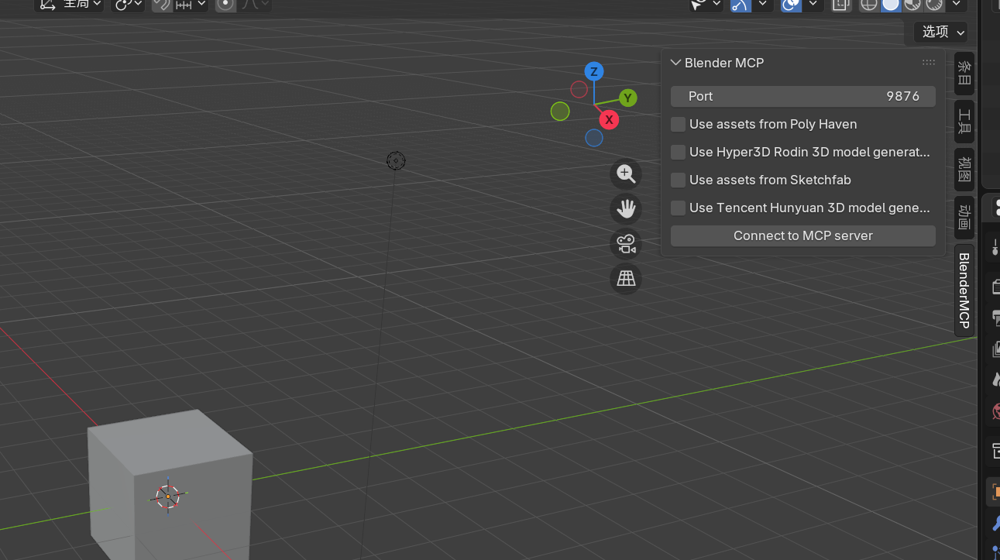

0. 学前说明
0.1 这套工作流到底在做什么
传统 3D 工作流：你 → 手动操作 Blender 菜单/快捷键 → 模型。
MCP 工作流：你 → 用中文/英文自然语言告诉 Claude → Claude 通过 MCP（Model Context Protocol，模型上下文协议） 把指令翻译成 Blender 能执行的 Python → Blender 自动建模、打光、摆摄像机、出动画。
一句话：让 AI 从"只会说"变成"会动手做"。Claude 负责理解意图和生成代码，Blender 负责执行，MCP 是两者之间的"万能遥控"。
0.2 软硬件要求
| 项目 |
要求 |
| 系统 |
Windows 10/11 或 macOS |
| Blender |
最新稳定版（建议 4.x） |
| Claude |
桌面端 Claude Desktop（免费账号即可跑 MCP） |
| Python |
需 uv 包管理器 |
| 显卡（仅混元3D本地） |
支持 CUDA 的 NVIDIA 显卡，建议 ≥ 8GB 显存 |
第一部分：Claude AI 基础
为什么要先学 Claude 本身？ 因为 Blender MCP 的本质是"让 Claude 调工具"。你越会用 Claude 的 Artifacts、Projects、Skills，后面连上 Blender 时越能发挥威力。
P2–P5 Claude 基础操作
- Artifacts：对话中右侧独立的"可运行/可预览"结果面板（代码、HTML、SVG、图表等）
- Projects：给 Claude 一个"长期项目空间"，可上传资料（参考图、风格指南），后续对话自动带上下文
- 提示词入门三要素：角色 + 任务 + 约束
第二部分：MCP 与 Blender 连接
P10 MCP 概念详解
MCP（Model Context Protocol） 是一种开放协议，让 LLM（如 Claude）能标准化地调用外部工具/数据源。类比 USB 接口：以前每个设备要单独写驱动；有了 USB（MCP），只要遵守协议，AI 就能"插上"任意工具。
┌─────────────┐ MCP ┌──────────────────┐ 本地socket ┌──────────┐
│ Host │ ───────────▶ │ MCP Client │ ────────────▶ │ MCP │
│ (Claude │ │ (在 Claude 内) │ │ Server │
│ Desktop) │ ◀─────────── │ │ ◀──────────── │ (Blender │
└─────────────┘ 结果回传 └──────────────────┘ 指令执行 │ MCP) │
└──────────┘
P14 使用 MCP 连接 Blender 与 Claude（核心步骤）
步骤 A：安装 Blender MCP 插件
- 下载 blender-mcp 仓库里的 addon.py
- 打开 Blender → Edit → Preferences → Add-ons → Install...
- 启用 "Interface: Blender MCP"
- 在 3D 视口按 N 打开右侧边栏，出现 BlenderMCP 选项卡
- 点击 "Connect to Claude"，Blender 端会在 localhost:9876 开启监听

Blender MCP 插件安装成功后，右侧边栏会出现 BlenderMCP 选项卡，显示端口配置和可用的 AI 服务（Poly Haven、Rodin、混元3D等）
步骤 B：配置 Claude Desktop
{
"mcpServers": {
"blender": {
"command": "uvx",
"args": ["blender-mcp"]
}
}
}
保存并完全退出重启 Claude Desktop。连接成功后，Claude 工具栏会出现锤子图标 🔨。
第三部分：自然语言驱动 3D 创作
P15 利用 Claude 创建 Blender 模型
| 意图 |
提示词示例 |
| 基础物体 |
"在原点创建一个低多边形风格的黄色鸭子" |
| 组合场景 |
"创建一个地牢里的低多边形场景：一条龙守着一锅金子" |
| 改材质 |
"把这辆车改成红色金属漆（red metallic）" |
| 加资产 |
"用 Poly Haven 的 HDRI、岩石和植被，做一个海滩氛围" |
P21 使用迭代式 AI 流程优化场景创作
迭代式 AI 工作流 = 生成 → 截图 → critique → 修正，循环。
- 生成：让 Claude 建初版场景
- 看：让 Claude 调用视口截图工具，把当前画面读回来
- 评：指出问题，例如"左边太空""主光太硬""比例不对"
- 改：Claude 针对性修改
提示词示例："先截一张当前视口图，评估构图和灯光问题，列出 3 条最该改的点，然后直接改掉。"
第四部分：混元 3D 图像转 3D 角色生成
连接原理（一句话理解）
Blender（带 MCP 插件）
│ 通过 MCP 协议
▼
Claude Desktop（发指令）
│ 调用工具
▼
Blender 插件收到 "生成 Hunyuan 模型" 指令
│ 向 API URL 发 HTTP 请求
▼
Hunyuan3D 本地 API 服务器（你要启动）
│ 在 GPU 上跑 DiT + Paint
▼
返回 .glb 模型给 Blender 场景
所以你现在 Blender 里看到的是客户端配置，必须另外启动一个 Hunyuan3D 服务进程，并在 API URL 里填上它的地址。
方案选择：三种路子
| 方案 |
要本地跑服务吗 |
成本 |
适合 |
| ① 官方 API（official api） |
❌ 不用 |
按次计费（可能有免费额度） |
不想本地部署的你，最推荐 |
| ② 本地 / AutoDL（local api） |
✅ 要跑服务 |
免费（AutoDL 按小时算卡费） |
有 N 卡 / 想免费 |
| ③ 网页版手动 |
❌ |
免费 |
零自动化、零折腾 |
方案①：官方 API（最快接入）★推荐
- Blender 插件下拉框从
local api 改选 official api
- 去 腾讯云控制台 创建 SecretId / SecretKey（SecretKey 创建后立刻记下，之后查不到）
- 搜「腾讯混元生3D」→ 阅读协议 → 开通服务（需实名认证）
- 把 SecretId、SecretKey 填进 Blender 插件对应字段
- 点
Connect to MCP server，之后让 Claude 直接调
这是异步接口：提交任务 → 拿 JobId → 轮询状态 → 拿到 GLB 自动进 Blender。插件会自动轮询，你不用手动等。
方案②：Windows 本地部署
使用 cshara1/Hunyuan3D-2GP-for-blender-mcp 仓库，专门给 Blender MCP 改了 API 服务，默认端口 8081。
3.1 准备 Python 环境
conda create -n hy3d python=3.10 -y
conda activate hy3d
pip install torch torchvision --index-url https://download.pytorch.org/whl/cu121
3.2 克隆仓库并装依赖
git clone https://github.com/cshara1/Hunyuan3D-2GP-for-blender-mcp.git
cd Hunyuan3D-2GP-for-blender-mcp
pip install -r requirements.txt
pip install -e .
3.3 编译纹理所需的自定义渲染器（关键步骤）
cd hy3dgen\texgen\custom_rasterizer
python setup.py install
cd ..\..\..
cd hy3dgen\texgen\differentiable_renderer
python setup.py install
cd ..\..\..
如果报错，先检查：
- 安装 Visual C++ 生成工具（Build Tools for Visual Studio 2022）
- 安装与 PyTorch 对应版本的 CUDA Toolkit
- 确认 Conda 环境已激活（括号里显示 hy3d）
3.4 启动本地 API 服务器
# 启用几何生成 + 纹理生成，默认端口 8081
python api_server.py --enable_t23d --enable_tex --port 8081
# 只生成几何、不要纹理（显存小/速度快）
python api_server.py --enable_t23d --port 8081
方案③：AutoDL 云端方案（推荐不想折腾 Windows 编译的人）
conda create -n hy3d python=3.10 -y
conda activate hy3d
pip install torch torchvision --index-url https://download.pytorch.org/whl/cu121
git clone https://github.com/cshara1/Hunyuan3D-2GP-for-blender-mcp.git
cd Hunyuan3D-2GP-for-blender-mcp
pip install -r requirements.txt
pip install -e .
# 启动服务（用 AutoDL 提供的端口映射）
python api_server.py --enable_t23d --enable_tex --host 0.0.0.0 --port 8081
安全的 SSH 端口转发（推荐）
# 在 Windows 本地 PowerShell 运行
ssh -L 8081:localhost:8081 root@xxx.autodl.pro -p <SSH端口>
然后 Blender 里 API URL 填 http://127.0.0.1:8081。
Blender 端配置
| 设置项 |
填什么 |
| Use Tencent Hunyuan 3D model generation |
勾选 |
| 模式下拉框 |
选 local api 或 official api |
| API URL |
http://127.0.0.1:8081 |
| Octree Resolution |
256（细节高）；8GB 显存建议 128 |
| Number of Inference Steps |
20 |
| Guidance Scale |
5.5 |
| Generate Texture |
服务器带了 --enable_tex 就勾选 |
测试：让 Claude 生成一个混元 3D 模型
文生 3D：
在 Blender 中用 Hunyuan3D 生成一把木椅子，放在场景原点，并把它缩放到合适尺寸。
图生 3D：
读取 C:\Users\<你的用户名>\Desktop\concept.png，用本地 Hunyuan3D 把它生成带纹理的 3D 模型导入 Blender，居中并缩放到 2 米高。
常见错误排查
| 现象 |
原因 / 解决 |
| Blender 点了生成没反应 |
API URL 没填 / 服务没启动；确认终端里有 Uvicorn running 输出 |
| 报 Connection refused |
端口不对 / 防火墙；Windows 防火墙允许 Python 通过 |
| 生成几何成功但纹理失败 |
没编译 custom_rasterizer 或没加 --enable_tex |
| CUDA out of memory |
Octree Resolution 降到 128；关掉 Generate Texture |
| 模型发黑/没材质 |
检查服务器是否带 --enable_tex，Blender 是否勾选 |
附录 A：Blender MCP 工具函数速查
| 能力 |
对应工具 |
说明 |
| 执行任意 Blender Python |
execute_blender_code |
最高权限，可做任何操作，务必先存盘 |
| 获取场景信息 |
get_scene / get_scene_info |
列出物体、相机、灯光等 |
| 创建物体 |
create_object |
立方体/球/灯光/相机/空物体等 |
| 设置材质 |
set_material |
颜色、金属度、粗糙度 |
| 生成 3D 模型 |
generate_hunyuan3d_object |
接 Hunyuan3D / Rodin |
| 视口截图 |
get_viewport_screenshot |
迭代工作流里"看"画面的关键 |
附录 B：常用提示词库
建模："Create a low-poly [X] in Blender, keep poly count minimal, add a name."
场景："Build a cozy low-poly cabin scene: rounded wooden house, warm yellow window light, 3 low-poly trees, grass ground."
相机/灯光："Point the camera at the scene center and make it isometric."
动画："Make an Apple-style product reveal: black bg, product fades in, camera slowly orbits, 5s @ 24fps."
迭代："Take a viewport screenshot, critique composition and lighting, list top 3 fixes, then apply them."
附录 C：故障排查
| 现象 |
原因 / 解决 |
| Claude 没有锤子图标 |
claude_desktop_config.json 写错 / 没重启 / uvx 路径不对 |
| 连接超时 / 端口冲突 |
多个 MCP 客户端同时开；只留一个；重启两端 |
| Blender 没反应 |
插件没点 "Connect to Claude"；确认 localhost:9876 没被防火墙挡 |
| 混元 3D 显存爆炸 |
关 --enable_tex 只跑几何；或用云端 API；升级显卡 |
*整理日期：2026-07-17 · 资料来源：B 站「设计门外憨」系列视频 + blender-mcp、Hunyuan3D-2GP-for-blender-mcp 官方文档及公开教程。*